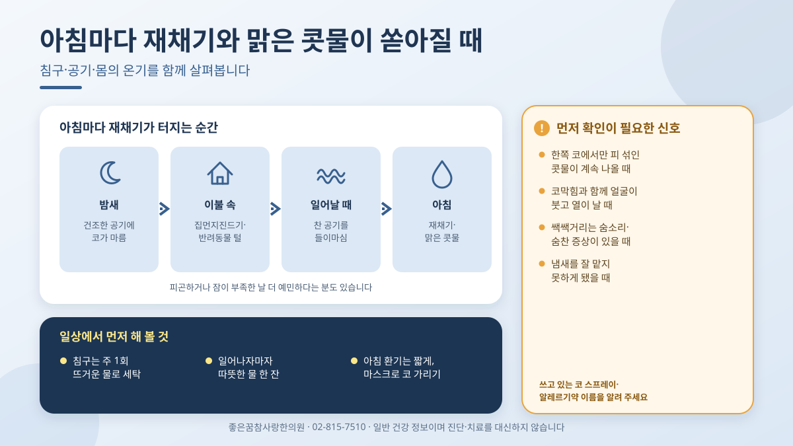
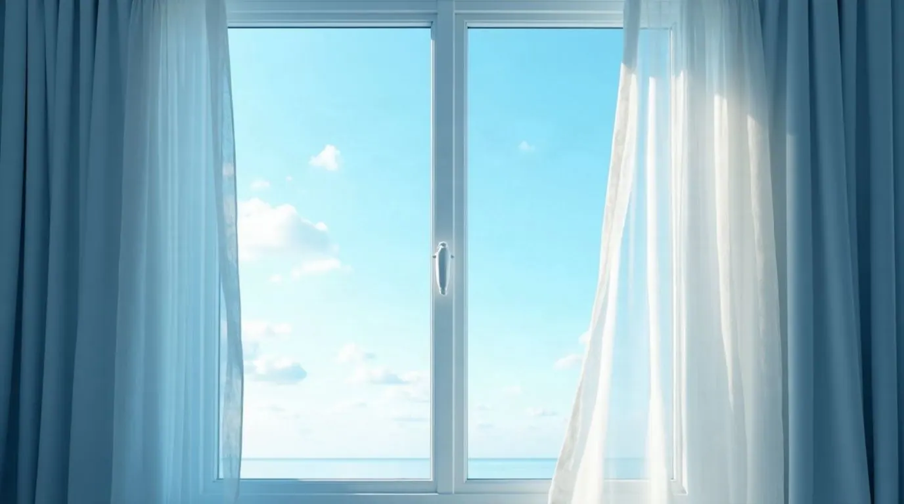

아침 재채기와 맑은 콧물은 침실의 먼지, 아침의 온도 차, 건조한 공기에 코가 예민하게 반응하는 경우가 많아 침구 관리와 실내 환경, 증상이 심한 계절을 먼저 묻고 생활 속 관리 방법을 함께 정리합니다.
여쭙는 것
- 재채기와 콧물이 특히 심한 계절이나 시간이 있나요?
- 침구는 얼마나 자주 세탁하시나요?
- 눈이 가렵거나 코가 막히는 증상도 함께 있나요?
생활에서 해 볼 것
- 침구를 주 1회 뜨거운 물로 세탁하기
- 일어나자마자 따뜻한 물 한 잔 마시기
- 잠자리 주변 먼지를 젖은 걸레로 닦기
한의원에서 함께 살필 것
- 아침 코 증상이 반복되는 경우 코 상태와 함께 몸이 차거나 쉽게 지치는 편인지 살핍…
- 코막힘 때문에 잠을 설치는 경우 잠의 질을 함께 살핍니다.
- 찬 공기에 예민한 경우 생활 환경을 함께 점검합니다.
먼저 확인이 필요한 신호
- 한쪽 코에서만 피 섞인 콧물이 계속 나오는 경우
- 코막힘과 함께 얼굴이 붓고 열이 나는 경우
- 쌕쌕거리는 숨소리나 숨찬 증상이 함께 있는 경우

아침에 일어나자마자 재채기와 맑은 콧물이 쏟아지는 것은 밤사이 침구의 먼지, 이불 밖의 찬 공기, 건조한 실내에 코가 예민하게 반응하는 경우가 많아, 침실 환경부터 점검하는 것이 첫걸음입니다. 눈 뜨자마자 재채기가 열 번씩 나오고 출근 준비 시간이 휴지와의 싸움이 되면 하루가 시작부터 지칩니다.
왜 이런 불편이 생길 수 있나요
- 이불과 베개의 집먼지진드기, 반려동물 털 같은 물질에 코 점막이 예민하게 반응할 수 있습니다.
- 따뜻한 이불 속에서 나와 찬 공기를 마시는 순간 재채기가 터지기도 합니다.
- 밤새 건조한 공기에 코가 마르면 아침에 더 예민해질 수 있습니다.
- 한의학에서는 몸이 차고 쉽게 지치는 경향도 코와 함께 살핍니다.
- 피곤하거나 잠이 부족한 날 코가 더 예민해진다는 분도 있습니다.

먼저 이렇게 여쭙니다
- 재채기와 콧물이 특히 심한 계절이나 시간이 있나요?
- 침구는 얼마나 자주 세탁하시나요?
- 눈이 가렵거나 코가 막히는 증상도 함께 있나요?
- 반려동물을 키우시나요?
- 출근 준비 중에도 계속되나요, 집을 나서면 줄어드나요?
일상에서 먼저 해 볼 수 있는 것
- 침구를 주 1회 뜨거운 물로 세탁하기
- 일어나자마자 따뜻한 물 한 잔 마시기
- 잠자리 주변 먼지를 젖은 걸레로 닦기
- 외출 뒤 옷을 털고 손과 얼굴 씻기
- 아침 환기는 짧게 하고, 찬 공기를 바로 들이마시지 않게 마스크로 코 가리기

한의원에서 함께 살필 수 있는 경우
- 아침 코 증상이 반복되는 경우 코 상태와 함께 몸이 차거나 쉽게 지치는 편인지 살핍니다.
- 코막힘 때문에 잠을 설치는 경우 잠의 질을 함께 살핍니다.
- 찬 공기에 예민한 경우 생활 환경을 함께 점검합니다.
좋은꿈참사랑한의원에서는 증상이 심한 시간과 침실 환경을 먼저 듣고, 진맥을 기본으로 하고 필요하다고 판단될 때 설진을 더해 몸 상태를 살핀 뒤 침이나 한약 상담 등 상태에 맞는 방법을 정합니다. 귀가 전에는 집에서 바꿔 볼 환경을 정리해 드립니다.
이렇게 기록해 오시면 상담이 쉬워집니다
- 재채기와 콧물이 심한 시간대와 계절
- 침구 세탁 주기와 반려동물 여부
- 쓰고 있는 코 스프레이나 알레르기약 이름
- 코막힘으로 잠에서 깬 횟수
- 눈 가려움이 함께 있었던 날

이런 증상은 먼저 확인이 필요합니다
- 한쪽 코에서만 피 섞인 콧물이 계속 나오는 경우
- 코막힘과 함께 얼굴이 붓고 열이 나는 경우
- 쌕쌕거리는 숨소리나 숨찬 증상이 함께 있는 경우
- 냄새를 잘 맡지 못하게 된 경우
숨이 차서 말을 잇기 어렵거나 입술이 파래지면 바로 119나 가까운 응급실을 찾으세요. 쓰고 있는 흡입기나 먹는 약은 처방한 의사와 상의 없이 줄이거나 끊지 않습니다.
한눈에 보는 표
| 구분 | 핵심 |
|---|---|
| 여쭙는 것 | 재채기와 콧물이 특히 심한 계절이나 시간이 있나요? 침구는 얼마나 자주 세탁하시나요? |
| 생활에서 해 볼 것 | 침구를 주 1회 뜨거운 물로 세탁하기 일어나자마자 따뜻한 물 한 잔 마시기 |
| 한의원에서 함께 살필 것 | 아침 코 증상이 반복되는 경우 코 상태와 함께 몸이 차거나 쉽게 지치는 편인지 살핍니다. 코막힘 때문에 잠을 설치는 경우 잠의 질을 함께 살핍니다. |
| 먼저 확인이 필요한 신호 | 한쪽 코에서만 피 섞인 콧물이 계속 나오는 경우 코막힘과 함께 얼굴이 붓고 열이 나는 경우 |
자주 묻는 질문
공기청정기가 도움이 되나요?
먼지가 많은 환경이라면 도움이 될 수 있지만, 침구 관리와 환기를 함께 하는 것이 좋습니다.
코 스프레이를 오래 써도 되나요?
종류에 따라 오래 쓰면 안 되는 제품도 있어 처방한 의사나 약사와 상의하세요.
평일 아침에는 시간이 없는데 주말에 가도 되나요?
토·일·공휴일에도 09:30~15:00에 진료합니다. 방문 전 전화(02-815-7510)로 확인해 주세요.
알레르기 검사를 받아야 하나요?
원인 물질을 알고 싶다면 이비인후과나 내과 검사가 도움이 될 수 있습니다. 받은 결과가 있다면 가져와 주세요.
이 글은 일반적인 건강 정보이며 개인의 진단이나 치료를 대신하지 않습니다. 증상이 있거나 복용 중인 약이 있다면 진료를 통해 확인하세요. 치료 효과는 개인마다 다를 수 있습니다.
작성 기준: 일반적으로 알려져 있는 건강 정보를 참고해 정리했습니다(대표원장 감수). 증상 기록은 1~2주 동안 하루 1회, 비슷한 시간에 적어 오시면 지난 상태와 비교하기 쉽습니다.
좋은꿈참사랑한의원은 재진 때 지난번 이야기부터 이어서 여쭙니다. 진료시간과 예약은 오시는 길에서 확인하세요.